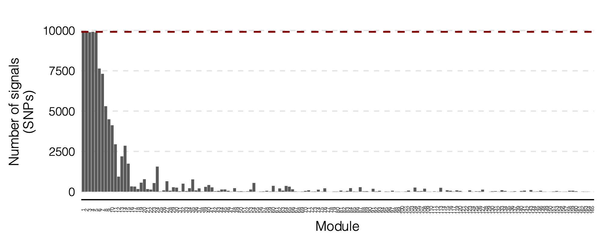
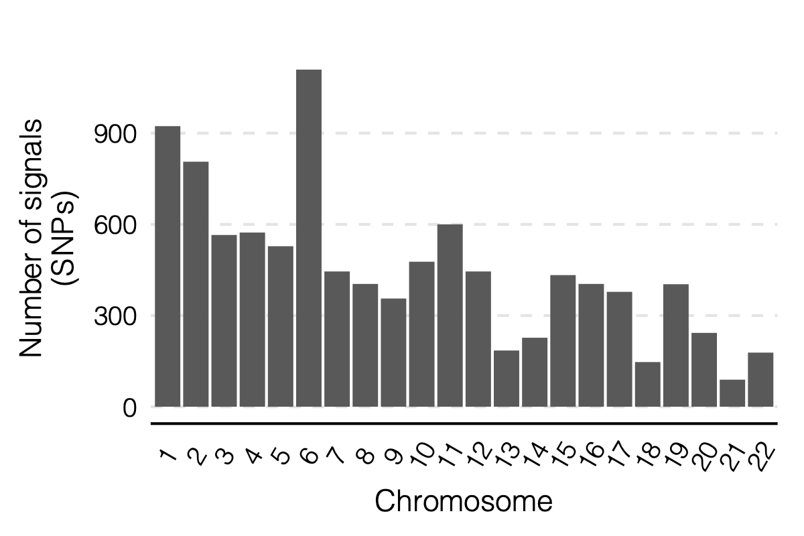

Log2022
Last updated: 2024-04-25
Checks: 7 0
Knit directory: GradLog/
This reproducible R Markdown analysis was created with workflowr (version 1.7.0). The Checks tab describes the reproducibility checks that were applied when the results were created. The Past versions tab lists the development history.
Great! Since the R Markdown file has been committed to the Git repository, you know the exact version of the code that produced these results.
Great job! The global environment was empty. Objects defined in the global environment can affect the analysis in your R Markdown file in unknown ways. For reproduciblity it’s best to always run the code in an empty environment.
The command set.seed(20201014) was run prior to running
the code in the R Markdown file. Setting a seed ensures that any results
that rely on randomness, e.g. subsampling or permutations, are
reproducible.
Great job! Recording the operating system, R version, and package versions is critical for reproducibility.
Nice! There were no cached chunks for this analysis, so you can be confident that you successfully produced the results during this run.
Great job! Using relative paths to the files within your workflowr project makes it easier to run your code on other machines.
Great! You are using Git for version control. Tracking code development and connecting the code version to the results is critical for reproducibility.
The results in this page were generated with repository version f1090b1. See the Past versions tab to see a history of the changes made to the R Markdown and HTML files.
Note that you need to be careful to ensure that all relevant files for
the analysis have been committed to Git prior to generating the results
(you can use wflow_publish or
wflow_git_commit). workflowr only checks the R Markdown
file, but you know if there are other scripts or data files that it
depends on. Below is the status of the Git repository when the results
were generated:
Ignored files:
Ignored: .DS_Store
Ignored: .Rhistory
Ignored: .Rproj.user/
Ignored: analysis/.DS_Store
Ignored: analysis/.Rhistory
Unstaged changes:
Modified: analysis/Trans.Rmd
Modified: analysis/week_log.Rmd
Note that any generated files, e.g. HTML, png, CSS, etc., are not included in this status report because it is ok for generated content to have uncommitted changes.
These are the previous versions of the repository in which changes were
made to the R Markdown (analysis/Log2022.Rmd) and HTML
(docs/Log2022.html) files. If you’ve configured a remote
Git repository (see ?wflow_git_remote), click on the
hyperlinks in the table below to view the files as they were in that
past version.
| File | Version | Author | Date | Message |
|---|---|---|---|---|
| html | f1090b1 | liliw-w | 2024-04-25 | Build site. |
| html | ee58970 | liliw-w | 2024-04-25 | Build site. |
| html | c50b98f | liliw-w | 2024-04-25 | Build site. |
| html | 2551271 | liliw-w | 2022-10-04 | Build site. |
| Rmd | d902cc1 | liliw-w | 2022-10-04 | typo edits |
| html | a638585 | liliw-w | 2022-10-04 | Build site. |
| Rmd | 6b29372 | liliw-w | 2022-10-04 | Add a new week |
| html | 0a2db07 | liliw-w | 2022-09-17 | Build site. |
| Rmd | 0d49cac | liliw-w | 2022-09-17 | add a new week |
| html | 27b1c90 | liliw-w | 2022-09-17 | Build site. |
| Rmd | cab5550 | liliw-w | 2022-09-17 | add ref link of section of ratio of module and chr |
| html | 124a92b | liliw-w | 2022-09-16 | Build site. |
| Rmd | 21796d9 | liliw-w | 2022-09-16 | correct the bonferroni cutoff for signals when keep cell |
| html | 1744c21 | liliw-w | 2022-09-14 | Build site. |
| Rmd | 8c62d61 | liliw-w | 2022-09-14 | update msig in DGN signals’ numbers and figures by add |
| html | cef27a7 | liliw-w | 2022-09-14 | Build site. |
| Rmd | 8a0e1cd | liliw-w | 2022-09-14 | add new week |
| html | b602908 | liliw-w | 2022-09-07 | Build site. |
| Rmd | 2a43458 | liliw-w | 2022-09-07 | add new weeks |
| html | afd3024 | liliw-w | 2022-08-24 | Build site. |
| Rmd | ff45d00 | liliw-w | 2022-08-24 | add new week |
| html | 56c966a | liliw-w | 2022-08-18 | Build site. |
| Rmd | 31d1e52 | liliw-w | 2022-08-18 | test side by side figures |
| html | 0ca4da8 | liliw-w | 2022-08-17 | Build site. |
| Rmd | 985ba11 | liliw-w | 2022-08-17 | add a new week |
| html | a85e562 | liliw-w | 2022-08-11 | Build site. |
| Rmd | 4ea6502 | liliw-w | 2022-08-11 | adjust figures |
| html | d3ffddd | liliw-w | 2022-08-11 | Build site. |
| Rmd | 06cbd57 | liliw-w | 2022-08-11 | New week |
| html | 4edeb7e | liliw-w | 2022-07-20 | Build site. |
| Rmd | 4870a2e | liliw-w | 2022-07-20 | add new week |
| html | dbaa236 | liliw-w | 2022-06-29 | Build site. |
| Rmd | ba5c42b | liliw-w | 2022-06-29 | Add new weeks |
| html | 07720fc | liliw-w | 2022-06-11 | Build site. |
| Rmd | 41a531b | liliw-w | 2022-06-11 | update theme |
| html | dacdae7 | liliw-w | 2022-06-11 | Build site. |
| html | e6a2199 | liliw-w | 2022-06-10 | Build site. |
| Rmd | ed7392a | liliw-w | 2022-06-10 | update rmd |
| html | f60b0b9 | liliw-w | 2022-06-09 | Build site. |
| Rmd | 06afdff | liliw-w | 2022-06-09 | update error bar from se to 0.95 CI |
| html | 0155a0f | liliw-w | 2022-06-08 | Build site. |
| Rmd | 518a1c0 | liliw-w | 2022-06-08 | add more details |
| html | 607ff2b | liliw-w | 2022-06-08 | Build site. |
| Rmd | 397fb52 | liliw-w | 2022-06-08 | add a new week |
| html | 21ae027 | liliw-w | 2022-06-08 | Build site. |
| Rmd | 0db9d74 | liliw-w | 2022-06-08 | add a new week |
| html | 0835a9c | liliw-w | 2022-04-27 | Build site. |
| Rmd | 6d481ca | liliw-w | 2022-04-27 | fix a typo |
| html | 1b8143d | liliw-w | 2022-04-27 | Build site. |
| Rmd | 0626baa | liliw-w | 2022-04-27 | add a new week |
| html | 59c3d71 | liliw-w | 2022-04-25 | Build site. |
| Rmd | 9d92b99 | liliw-w | 2022-04-25 | Add a new week |
| html | 2e6c039 | liliw-w | 2022-04-14 | Build site. |
| Rmd | fae1f4e | liliw-w | 2022-04-14 | adjust fig position |
| html | 3395a26 | liliw-w | 2022-04-14 | Build site. |
| Rmd | d0a08e6 | liliw-w | 2022-04-14 | adjust fig position |
| html | 8b9071e | liliw-w | 2022-04-14 | Build site. |
| Rmd | 424015b | liliw-w | 2022-04-14 | add new week |
| html | 72025bf | liliw-w | 2022-02-04 | Build site. |
| Rmd | 089c609 | liliw-w | 2022-02-04 | new week |
| html | 1274e24 | llw | 2022-01-19 | Build site. |
| Rmd | 9976af6 | llw | 2022-01-19 | new week |
| html | bd69a21 | llw | 2022-01-13 | Build site. |
| Rmd | 28d0a2b | llw | 2022-01-13 | new week |
| html | ec0a2af | llw | 2022-01-04 | Build site. |
| Rmd | 9e5c2e0 | llw | 2022-01-04 | new week |
| html | 97b4ca1 | llw | 2022-01-03 | Build site. |
| html | 4c90bd8 | llw | 2022-01-03 | Build site. |
| Rmd | 6dc3f9c | llw | 2022-01-03 | add a new year |
If any figures don’t show, try opening in Safari.
Oct 5
1. Coloc between trans-eQLTs of MSigDB modules and blood traits
We observed something interesting on one of the MSigDB module: HALLMARK_HEME_METABOLISM (module 9). The trans signals corresponding to this pathway are near genes with relevant functions with the pathway in red blood cells.
Therefore, we decided to look at the colocalization of HALLMARK_HEME_METABOLISM and red blood cell traits.
So, I performed colocalization of trans-eQTLs of 50 MSigDB pathways and GWAS loci of 29 blood related traits.
A few numbers
50 MSigDB pathways
29 blood related traits
129 trans- regions and 112 merged regions
There are 129 regions (with the region’s lead SNP as a trans-eQTL) that were used to do coloc. After merging close lead SNPs of the regions, there are 112 merged regions left.
Results
- Proportion of regions & merged regions that coloc with each of traits
Figure: Coloc proportion of trans loci of MSig pathways and blood traits, based on 129 originally defined regions and 112 merged regions. Blue: original non-merged regions. Green: merged regions. Dark: coloc.
| Version | Author | Date |
|---|---|---|
| 2a8ec6a | liliw-w | 2022-10-04 |
See numerical result:
/project2/xuanyao/llw/MODULES/MSigDB/coloc_MSigDB/ukbb_all/coloc_region_prop_merged.txt.
- Number of merged regions that have coloc for each pair of (pathway, trait)
Figure: Number of coloc merged regions for all pairs of (pathway, trait). Colors: Traits of various types.
| Version | Author | Date |
|---|---|---|
| 2a8ec6a | liliw-w | 2022-10-04 |
See numerical result for the specific coloc regions of (pathway, trait):
/project2/xuanyao/llw/MODULES/MSigDB/coloc_MSigDB/ukbb_all/coloc_region_summary_all_merged_annot.txt.
A few important columns:
Region: the coloc region defined by the lead trans-eQTLs in that region and the correpsonding module
module, module_annot: the coloc module and its MSig pathway annotation
Phenocode, trait: the coloc trait
PP.H4.abf: coloc PP4
merged_region: the merged region that the region belong to
merged_region_n: the number of regions in the merged region
See file
/project2/xuanyao/llw/MODULES/MSigDB/coloc_MSigDB/ukbb_all/coloc_region_summary_M9_HEME.txt
for the coloc regions of only
HALLMARK_HEME_METABOLISM.
Number of (not merged) regions that have coloc for each pair of (pathway, trait)
Observations
HALLMARK_HEME_METABOLISM (module9) and red blood cells traits share many coloc loci.
Particularly more than white blood cell traits.
HALLMARK_HEME_METABOLISM (module9) and platelet traits also share a few coloc regions.
Sep 21
1. h2 enrichment of (module, trait) re-ordered by clustering
How?
Use distance of -log10(p of h2 enrich) to cluster modules and traits.
Draw -log10(p of h2 enrich) as shades.
Annotate with trait types.
2. eQTLGen with MSigDB modules
Relative path
All results & figures for this section are in folder
/project2/xuanyao/llw/eQTLGen/MSigDB_est_Sigma/.
Signals before removing any modules based on ratio
Signal file:/project2/xuanyao/llw/eQTLGen/MSigDB_est_Sigma/postanalysis/signal.txtNumbers: 72696 significant (snp, module) pairs, corresponding to 9309 trans-eQTLs and all 50 modules.Signal distributionObservationInflated signals for the first few large module. Thus, remove these modules based on their \(\frac{null \ snps}{module \ size}\) ratios. See updated signals in next section.
Signals after removing (module, chr) with ratio < 50
In previous section, I gave \(\frac{null \ snps}{module \ size}\) ratio for each pair of (module, chr). So here, I remove a (module, chr) from signals if its ratio < 50.
How many (module, chr) are saved compared to only module-based ratio?
module-based ratio: 11 modules, 242 (module, chr) in total.
chr-based ratio: 253 (module, chr) in total.
11 more were saved.
Result files
Signal file:
/project2/xuanyao/llw/eQTLGen/MSigDB_est_Sigma/postanalysis/signal_rm_infl_ratio_50_module_chr.txtAnnotation files with module pathway, gwas catalog trait, cis- genes:
/project2/xuanyao/llw/eQTLGen/MSigDB_est_Sigma/postanalysis/signal_cis_genes_w_annot_rm_infl_ratio_50_module_chr.txt
Numbers: 2134 significant (snp, module) pairs, corresponding to 988 trans-eQTLs and 15 modules.
Signal distribution
| Version | Author | Date |
|---|---|---|
| be8dd1c | liliw-w | 2022-09-17 |
| Version | Author | Date |
|---|---|---|
| be8dd1c | liliw-w | 2022-09-17 |
Figure: LEFT: on modules. MIDDLE: on chr’s. RIGHT: on (module, chr).
| Version | Author | Date |
|---|---|---|
| be8dd1c | liliw-w | 2022-09-17 |
Observation
Looks like the additionally added module 37 has many signals, I suspect if these signals are inflated. So I also looked at signals after removing modules based on module-based ratios, as in previous section and what we used in eQTLGen with co-expression modules.
Signals after removing modules with ratio < 50
Result files
Signal file:
/project2/xuanyao/llw/eQTLGen/MSigDB_est_Sigma/postanalysis/signal_rm_infl_ratio_50.txtAnnotation files with module pathway, gwas catalog trait, cis- genes:
/project2/xuanyao/llw/eQTLGen/MSigDB_est_Sigma/postanalysis/signal_cis_genes_w_annot_rm_infl_ratio_50.txt
Numbers: 1756 significant (snp, module) pairs, corresponding to 870 trans-eQTLs and 11 modules.
Signal distribution
| Version | Author | Date |
|---|---|---|
| be8dd1c | liliw-w | 2022-09-17 |
| Version | Author | Date |
|---|---|---|
| be8dd1c | liliw-w | 2022-09-17 |
Figure: LEFT: on modules. MIDDLE: on chr’s. RIGHT: on (module, chr).
| Version | Author | Date |
|---|---|---|
| be8dd1c | liliw-w | 2022-09-17 |
3. eQTLGen with co-expression modules
Relative path
All results & figures for this section are in folder
/project2/xuanyao/llw/eQTLGen/DGN_est_Sigma/.
Annotate trans-eQTLs with gwas catalog snps and traits
Result files
Signal file:
/project2/xuanyao/llw/eQTLGen/DGN_est_Sigma/postanalysis/signal_rm_infl_ratio_50.txtAnnotation files with module pathway, gwas catalog trait, cis- genes:
/project2/xuanyao/llw/eQTLGen/DGN_est_Sigma/postanalysis/signal_cis_genes_w_annot_rm_infl_ratio_50.txt
Numbers: 8116 significant (snp, module) pairs, corresponding to 2161 trans-eQTLs and 122 modules.
4. Re-draw #signals for (module, chr)
Make chr the chromosome position.
P-value as point size.
Figure: Signals for (chr, module). Y-axis is chromosome postiion. X-axis is module. Each point is a signal. Point size means -logP.
| Version | Author | Date |
|---|---|---|
| 2a8ec6a | liliw-w | 2022-10-04 |
5. Figures for eQTLGen results with co-expression modules
Signal figure
#signals for (chr, module)
/project2/xuanyao/llw/eQTLGen/DGN_est_Sigma/plot/signal_module_chr_rm_infl_ratio_50.pdf-logp for (chr postion, module)
/project2/xuanyao/llw/eQTLGen/DGN_est_Sigma/plot/signal_module_chr_rm_infl_ratio_50_chr_pos.pdf
Cis- gene manhattan figure
6. trans- coloc with cis- genes
Updated numbers on merged regions,
255 trans- loci
179 merged trans- loci
51 merged trans- loci coloc with at least one gene’s eQTLs
41 merged trans- loci coloc with at least one gene’s sQTLs
Overall, 60 merged trans- loci coloc with at least one gene’s eQTL or sQTLs
Sep 14
1. MSigDB modules in eQTLGen
Fix error
Weird observation
Why for some modules, so many genes were removed due to being cis genes in the module (
num_gene_snp_used_M*.pdf)? In contrast, for eQTLGen-DGN modules, not many genes were removed due to being cis to SNPs.The error (code)
Wrong genes in splitted z matrices
z.module*.chr*.txt.gz.
Updates
Re-split z matrices for (module, chr).
Update sizes of various gene sets for each module (
num_gene_snp_used_M*.pdf).
| Version | Author | Date |
|---|---|---|
| cf3ab0a | liliw-w | 2022-09-14 |
Figure: Updated number of genes for a gene used for trans-PCO.
| Version | Author | Date |
|---|---|---|
| cf3ab0a | liliw-w | 2022-09-14 |
- Re-run trans-PCO on the updated splitted z matrices.
Signals
2. Inflation simulation to choose modules
As in previous section, I looked at how \(\hat{\Sigma}\) can lead to inflated signals given different ratios of \(\frac{null \ snps}{module \ size}\). I simulated ratios 1, 5, 10, 50, 100, 150. As a result, we decided to use 50 as the ratio cutoff to select modules for final signal identification.
However, in the case of MSigDB modules in eQTLGen, not many modules have ratios larger than 50. So, we were interested if any ratio between 10 and 50 can still lead to non-inflated signals, so that we can save more MSigDB modules for signal identification.
Add ratios between 10 and 50
Therefore, I added a few ratios between 10 and 50, (10, 20, 30, 40, 50, 60, 70), to simulations to look at if there is any p-value inflations.
Results and observations
- Histogram and qq-plots
| Version | Author | Date |
|---|---|---|
| cf3ab0a | liliw-w | 2022-09-14 |
| Version | Author | Date |
|---|---|---|
| cf3ab0a | liliw-w | 2022-09-14 |
Figure: QQ-plots of p-values under estimated sigmas of various ratios between 10 and 50.
| Version | Author | Date |
|---|---|---|
| cf3ab0a | liliw-w | 2022-09-14 |
- Ratio 20 is too low. There are obvious inflations.
Update ratio plot
In previous section, I looked at the ratio of each MSigDB module, by the definition of \(\frac{null \ snps}{eqtlgen \ genes \ in \ module}\).
I looked at a more accurate definition of the actually ratio for each module, i.e. $. Because for a (SNP, module), the actually used genes are module size - gene not in eqtlgen - remove cis genes - remove cross map gene. So I thought using this new definition can increase the ratio.
Figure: Ratio used for each (module, chr). Each dot is ratio for a chr. Red dot is the ratio for each module by #null SNPs/#genes in module.
| Version | Author | Date |
|---|---|---|
| cf3ab0a | liliw-w | 2022-09-14 |
The ratio increases to some extent.
Aug 30 & Sep 7
1. eQTLGen trans-eQTLs signals under MSigDB modules
MSigDB modules and overlap with eQTLGen genes
Numbers
There are 19250 genes analyzed in eQTLGen for trans- associations.
There are 7321 (uniquely 4383 ) genes in MSigDB modules.
And there are 6114 (uniquely 3558) MSigDB genes overlapped with eQTLGen genes.
Figures
| Version | Author | Date |
|---|---|---|
| 6800564 | liliw-w | 2022-09-07 |
Figure: LEFT: Each module has overlapped genes. How many modules do every gene belongs to? RIGHT: Size of MSigDB modules and how many are eQTLGen genes?
| Version | Author | Date |
|---|---|---|
| 6800564 | liliw-w | 2022-09-07 |
Choose z cutoff to define null snps for estimating \(\Sigma\)
Figure: Which z-score cutoff should be chosen for defining null SNPs to estimate Sigma?
| Version | Author | Date |
|---|---|---|
| 6800564 | liliw-w | 2022-09-07 |
Use \(10^{-4}\).
Ratios
| Version | Author | Date |
|---|---|---|
| 6800564 | liliw-w | 2022-09-07 |
Figure: LEFT: module size v.s. null SNPs that can be used for Sigma estimation. RIGHT: Ratio of these two numbers for each module.
| Version | Author | Date |
|---|---|---|
| 6800564 | liliw-w | 2022-09-07 |
Genes in a module used by each SNP
Why? For a pair of (SNP, module),
Remove genes in the module on the same chr as the SNP.
Remove genes in the module cross-mappable with cis genes of the SNP.
Therefore, each SNP may correspond to a different gene set for a same module.
Figure: How many genes in a module were finally used for each SNP, after removing cis genes on the same chr and removing cross map genes with the SNP’s cis genes.
| Version | Author | Date |
|---|---|---|
| 6800564 | liliw-w | 2022-09-07 |
Run trans-PCO on eQTLGen sum stats under MSigDB modules
Running…
2. Annotate cis genes of signals in DGN under MSigDB modules
See
/project2/xuanyao/llw/MODULES/MSigDB/postanalysis/signal_cis_genes.txt.
File columns are same as in previous signal file of DGN under co-expressed modules. The first few columns are signal info: module, chr, pos, p-value, etc. The last few columns are the SNP’s nearest gene and distance, cis- genes and distance (<1Mb).
3. Add annotations to modules and SNPs (MSigDB signals in DGN)
Result file
See
/project2/xuanyao/llw/MODULES/MSigDB/postanalysis/signal_cis_genes_w_annot.txt.
Columns explanation:
signal: module:snp signal
annot_module: MSigDB pathway annotation of the signal module
if_gwas_catalog: if the signal SNP is in gwas catalog SNP
gwas_catalog_trait: the signal SNP’s corresponding associated trait(s) in gwas catalog
if_cis_gwas_catalog: if the signal SNP is cis (within 100kb) to any gwas catalog SNP
cis_gwas_catalog_trait: the cis SNPs’ corresponding associated trait(s) in gwas catalog
module
SNP
chr
pos
p
q
nearest_gene: the nearest gene of the signal SNP
nearest_dis: the distance of the signal SNP to the nearest gene
near_genes: genes near (within 1Mb) the signal SNP
near_dis: the distance of the signal SNP to the near genes
rsid
gwas_catalog_report_gene: report gene of the corresponding gwas catalog SNP of the signal snp
gwas_catalog_mapped_gene: experimental mapped genes of the corresponding gwas catalog SNP of the signal snp
cis_rsid: rsid of gwas catalog cis snps
cis_dis_gwas_catalog: distance between the signal SNP and the gwas catalog cis snps
cis_gwas_catalog_report_gene: the report genes of the gwas catalog cis snps
cis_gwas_catalog_mapped_gene: the experimental mapped genes of the gwas catalog cis snps
Signal module annotation
Figure: How many genes in a module were finally used for each SNP, after removing cis genes on the same chr and removing cross map genes with the SNP’s cis genes.
| Version | Author | Date |
|---|---|---|
| cf3ab0a | liliw-w | 2022-09-14 |
Signal SNP annotation by GWAS catalog SNPs (with disease)
gwas catalog association features:
SNPs are based on hg38.
Association tests: SNP, haplotype, interaction.
merged rsid.
only show lead SNPs. So I also looked at if a singal SNP is cis to any gwas catalog SNPs. (Though to be rigorous, I should have checked if they are in LD. but for simplicity, for now I just checked the distance)
965 (SNP, module) pairs. 220 are gwas catalog significant SNPs. All are within 100kb of gwas catalog significant SNPs.
??? look into the specific pathways v.s. disease/trait ???
Aug 17 & Aug 24
1. Merged coloc regions
How?
If two trans-eQTL regions under previous definition have close lead SNPs within 200kb, they are merged to one region. As a result, 255 regions were merged to 179 regions.
I counted a merged region as a coloc region if any of its sub-regions has coloc signals.
I calculated the coloc proportion as #coloc/(255 or 179), instead of using those “candidate regions” as denominator as calculated previously.
I looked at 29 blood related traits, autoimmune diseases, and some other traits (including height).
Figures & Observations
Figure: Coloc proportion of blood traits, autoimmune diseases, and other traits, based on 255 originally defined regions and 179 merged regions. Blue: original non-merged regions. Green: merged regions. Dark: coloc.
| Version | Author | Date |
|---|---|---|
| 985ba11 | liliw-w | 2022-08-17 |
Other files:
Numerical results of the figure, see
For blood,
/project2/xuanyao/llw/coloc/ukbb_coloc_blood_traits/data/coloc_region_prop_merged.txt.For autoimmune,
/project2/xuanyao/llw/coloc/immune_traits/pmid_all/coloc_region_prop_merged.txt.For other ukbb traits,
/project2/xuanyao/llw/coloc/ukbb_coloc_more_traits/all_trait/data/coloc_region_prop_merged.txt.
Detailed coloc merged region for each trait, e.g. the original coloc region was merged to which region, see
For blood,
/project2/xuanyao/llw/coloc/ukbb_coloc_blood_traits/data/pheno*.coloc_reg_w_merged.txt.For autoimmune,
/project2/xuanyao/llw/coloc/immune_traits/pmid*/data/coloc_reg_w_merged.txt.For other ukbb traits,
/project2/xuanyao/llw/coloc/ukbb_coloc_more_traits/ukbb*/data/coloc_reg_w_merged.txt.
For height, modules : M153, M156, M25, M51. Loci: 3:101044144. Similar for autoimmune traits.
2. S-LDSC for “other traits”
All modules for all blood traits
/project2/xuanyao/llw/ldsc/h2_enrich_comb/M*_blood_traits.resultsAll modules for all autoimmune diseases and all other traits
/project2/xuanyao/llw/ldsc/h2_enrich_comb/T_*_all_modules.resultsFigures for all
- Module based (blood traits)
/project2/xuanyao/llw/ldsc/h2_enrich_comb/plots/M*_all_traits.results.pdf- Trait based (autoimmune diseases & other traits)
/project2/xuanyao/llw/ldsc/plots/T_*_all_modules.results.pdf- Enrich p v.s. module v.s. trait
/project2/xuanyao/llw/ldsc/plots/h2_enrich_all.pdf
Figure: Heatmap of coloc regions and h2 enrichment for pairs of module and trait.
| Version | Author | Date |
|---|---|---|
| b3ba297 | liliw-w | 2022-08-24 |
3. Covariates
- 117 modules
Use \(0.1/10^6/117=8.5e-10\) as signal cutoff,
1135 (trans-eQTL, module) pairs
21 modules
1028 unique trans-eQTLs
Figure: Heatmap of coloc regions and h2 enrichment for pairs of module and trait.
Figure: Heatmap of coloc regions and h2 enrichment for pairs of module and trait.
Aug 10
1. How many trans-eQTL Loci are cis to the trans target gene module?
How? and result files
I used two ways:
If a signal’s nearest gene (cis- genes within 1Mb) is (are) in its trans- target module.
What is the distance between a signal and genes in the module? Is distance to any gene within 1Mb of the signal?
Result file:
/project2/xuanyao/llw/DGN_no_filter_on_mappability/postanalysis/cis_genes_in_module.txt/project2/xuanyao/llw/DGN_no_filter_on_mappability/postanalysis/dis_to_genes_in_module.txt
Numerical results
Among 3899 (SNP, module) signal pairs in DGN,
The nearest gene (or at least one gene within 1Mb) of trans-eQTLs in 79 (372) (SNP, module) pairs are in the trans- target module.
trans-eQTLs in 186 (372) (SNP, module) pairs are within 100kb (1Mb) of at least one gene in the trans- target module.
2. Simulation when beta has same correlation as \(\Sigma\)
Goal
To see if PC1 has any power in this case.
Signals of previous simulations have large p-values (max ~0.05), under null distribution.
The simulated null distribution has large p-values (0.001% < 1e-5, 0.01% < 1e-4, 0.1% < 1e-3).
Signals in DGN have largest p-value ~1e-7.
Why simulated null distribution has large p-values?
Procedure
To look into how \(cor(\beta)\) affects the power, I considered the following parameter settings,
\(cor(\beta)=\Sigma\), \(caus=0.3\), \(N=800\)
\(cor(\beta)=\Sigma\), \(caus=1\), \(N=800\)
\(cor(\beta)=I\), \(caus=1\), \(N=800\)
\(cor(\beta)=I\), \(caus=0.3\), \(N=800\) (previous setting)
Observation
Figure: coloc between trans and cis loci.
| Version | Author | Date |
|---|---|---|
| 1b724ae | liliw-w | 2022-08-11 |
PC1 still has low power.
Using \(\Sigma\) as \(cor(\beta)\) doesn’t matter much to power under \(caus=0.3\).
Using \(\Sigma\) as \(cor(\beta)\) increase power under \(caus=1\).
Increased \(caus\) doesn’t matter much to power under independent \(cor(\beta)\).
Increased \(caus\) increase power under \(cor(\beta)=\Sigma\).
3. Cell type analysis
Aggregate p-values, Bonferroni, signals. Except M1 & M2.
Run z.sh for M1 & M2.
4. Re-define coloc regions
Previously, a region for coloc is defined to be a region of length 100kb centered at a lead SNP. As a result, for two coloc regions, their lead SNPs can be as closest as 50kb. In most cases (only one causal variant), it doesn’t make much sense to see these two regions as two different regions.
Therefore, I need to merge these kind of regions. How?
I focus on the regions with significant coloc. If two regions’ lead SNPs are within 200kb, then these regions are counted as one.
See result file:
/project2/xuanyao/llw/coloc/ukbb_coloc_blood_traits/res_coloc_reg_merged.txt
Aug 03
1. Check enriched \(h^2\) of all modules in all three autoimmune diseases
To look at if there is h2 enrichment of any module in three autoimmune diseases (i.e. cd, ibd, allergy), I ran S-LDSC for all modules.
See h2 enrich for cd, h2 enrich for ibd, h2 enrich for allergy.
2. Run Trans-PCO in DGN with keeping cell type proportion and expression pc’s
This is a suggestion from the committee meeting. We observed a high proportion of trans-eQTLs and blood traits. We interpreted it as the enrichment of trans-eQTLs in cell type proportion.
However, since we attempted to remove the cell type proportion as covariates, the above intepretion doesn’t send a good message.
So, the suggestion was to not remove cell type proportion at all, and see what happens. Therefore, I need to run trans-PCO without regression out cell type proportions (and expression PC’s, since they are also relevant to cell type proportions), and see how the gene modules, signals, coloc with blood traits change.
Progress: running trans-PCO on DGN.
3. Update eQTLGen using ratio 100 (instead of 50)
Numbers
108 (previously, 130) modules are used for signal detection.
There are 5610 significant (trans-eQTL, module) pairs.
There are 101 modules that have at least one trans-eQTL.
There are 1697 eQTLGen SNPs that are significant trans-eQTL for at least one module.
Signal figures
Updates see
/project2/xuanyao/llw/eQTLGen_est_Sigma/plot.
Update: DGN replication in eQTLGen
Out of 3899 DGN (SNP, module) signal pairs, 33 of them are also analyzed in eQTLGen.
Out of 33 DGN signals, 33 are replicated in eQTLGen.
Update: eQTLGen replication in DGN
Out of 5610 eQTLGen (SNP, module) signal pairs, 5230 of them are also analyzed in DGN.
Out of 5230 eQTLGen signals, 69 are replicated in DGN.
Add buffer region to DGN signals to see replication
eQTLGen specific signal (SNP, module) pairs not in DGN
Out of 5230 eQTLGen (SNP, module) signal pairs that were also analyzed by DGN,
145 190 212 236 are near at least one DGN signal within same loci of distance:
1e+05 2e+05 5e+05 1e+06 bp, respectively.
4672 are not close to any DGN signals.
eQTLGen specific signal SNPs not in DGN
Out of 1558 eQTLGen signal SNPs that were also analyzed by DGN,
153 216 263 378 are near at least one DGN signal within same loci of distance:
1e+05 2e+05 5e+05 1e+06 respectively.
0 are not close to any DGN signals.
Interesting examples detected in eQTLGen but missed in DGN
In earlier section where I used ratio 50 to see the replications, I gave a few interesting examples of signals detected in eQTLGen but missed in DGN and have more significant z-scores.
After updating the ratio to 100, those examples still hold.
June 29 & July 06
1. coloc between trans- and cis-QTLs
With cis-sQTLs
255 trans- regions in total.
163 candidate coloc regions, i.e. regions which have at least one intron with min p < 1e-5. (Light green regions).
66 regions are coloced with at least one intron. (Dark green regions).
With cis-eQTLs (updates)
When I was looking into coloc with cis-s, I found some results were weird about the coloc numbers with cis-e. So I re-analyzed cis-e coloc with trans. Numbers are updated as below.
255
120 –> 222
54 –> 93
With either cis-e or cis-s
255
222
104
2. Module g:profiler enrichment
Files for enrichment of each 166 modules,
/project2/xuanyao/llw/DGN_no_filter_on_mappability/module_enrich.
3. Simulations
Simulation with large N, caus, var
Aim
To look at PC1 and PCO power. If PC1 has any power in this case.
Parameters
var.b: 0.2 (0.001 by default), caus: 1 (0.3 by default), N: 800 (500 by default). 10^3 simulations, 10^4 samples.
I looked at only one scenario.
Figures & Observations
Trans-PCO and MinP both have power of 1 across all simulations.
PC1 tends to be either extremely powerful or powerless.
Figure: Simulation power when parameters, N, caus, var, are large. Green point is mean +- 95% CI.
| Version | Author | Date |
|---|---|---|
| 26e2dad | liliw-w | 2022-07-20 |
Simulation where PC1 has the highest power
Aim
When true beta’s align with the first eigenvector, what does power look like for PC1? and the other two methods?
Parameters, and how?
To make beta’s have same direction with u1, I first make beta equal u1 (which has length 1), then scale beta by a constant to set its genetic variance.
I set beta’s to have the same length as beta generated by default setting, i.e. var.b=0.001, caus=0.3, N=500. However, in this case, powers of all three methods are low, even for the oracle test, which indicates power in this case is intrinsically low.
This may be due to the smaller effects of each individual gene given a fixed var and more genes with nonzero effects.
Therefore, I increased beta’s length by \(u_1 \times ||beta^{default}||/0.3 \times 1.2\), i.e. 4 times longer.
I looked at power at various N’s.
Figures & Observations
- PC1 has the highest power.
Figure: Simulation power when PC1 has the highest power. Error bar is mean +- 95% CI.
| Version | Author | Date |
|---|---|---|
| 26e2dad | liliw-w | 2022-07-20 |
Simulation 3
4. trans- target module of gene KLF14
Goal
KLF14 relates to T1D, an autoimmune disease. Check if its trans- target module is enriched in T1D related pathways.
Observations
Signal is (7:130536491, module30).
Genomic location of the trans-eQTL and KLF14, see genome browser. The distance is 119,090 bp.
GO enrichment of the module 30
Module 30 is enriched in two GO molecular functions:
- pantetheine hydrolase activity
The Vanin genes are a family that encode pantetheinases (or pantetheine hydrolase).
VNN1, VNN2, VNN3 are in module 30.
- CXCR chemokine receptor binding
5. Check coloc between M71 & M74 (M154) v.s. PLAGL1
coloc overview
M154, coloc
module154:6:144291150 0 PLAGL1 206 6.81723922870508e-21 6.90867766367242e-12 7.55979453410063e-11 0.0756876149474007 0.924312384970091 PLAGL1
M74, no coloc
module74:6:144304358 1.765254609154e-14 PLAGL1 209 2.57183433027403e-17 9.47954145652225e-13 2.36642981576199e-05 0.872116097251446 0.127860238449448 PLAGL1
M71, no coloc
module71:6:144304358 9.50528573628873e-08 PLAGL1 209 6.79628848096945e-14 2.30495794945591e-13 0.0625348977909173 0.211360698835187 0.726104403373597 PLAGL1
Figures & Observations
Coloc between PLAGL1 loci and three modules look very similar. But only M154 has significant coloc.
no coloc because there are two independent causal variants for PLAGL1 and M154, M74, and one causal variant for M71?
| Version | Author | Date |
|---|---|---|
| 26e2dad | liliw-w | 2022-07-20 |
| Version | Author | Date |
|---|---|---|
| 26e2dad | liliw-w | 2022-07-20 |
Figure: Coloc near loci PLAGL1.
| Version | Author | Date |
|---|---|---|
| 26e2dad | liliw-w | 2022-07-20 |
coloc.susie allow more than one causal variants
coloc.susie <– runsusie <–
z <– sign of effect matters <– no sign info of
module-qtls.
Run coloc.susie forcely by assuming module-qtls have
same signs, I observed significant coloc.
June 15 & June 22
1. eQTLGen specific signals
Specific (SNP, module) pairs
Observations
Out of 7577 eQTLGen (SNP, module) signal pairs that were also analyzed by DGN,
184, 240, 262, 286 pairs are near at least one DGN signal within same loci of distance:
1e+05, 2e+05, 5e+05, 1e+06 bp, respectively.
6876 pairs are not close to any DGN signals.
Result file:
/project2/xuanyao/llw/eQTLGen_est_Sigma/postanalysis/eqtlgen_spec_pair_to_dgn.txtWhy so many Inf distances?
Inf distance means no DGN signal SNPs on the same chr as eQTLGen (SNP, module).
In fact, overlapped SNPs, but not right module.
Example
I obversed a lot of SNPs (and corresponding modules) that are signals in eQTLGen, but not in DGN.
Among those, one interesting loci SNP: 3:56849749. This loci is near gene ARHGEF3, and it has been detected in DGN (for module 4). However, in eQTLGen, it is a signal for a few more modules missed in DGN.
Therefore, I looked at z-scores of this SNP and those eQTLGen-specific modules, in both QTLGen and DGN. The goal is to see if eQTLGen-z’s are generally more significant than DGN-z’s. If so, then it indicates larger sample size of eQTLGen improves detection power.
Figure of z distributions
Add summary stats of distribution difference?
Specific SNPs
Observations
Out of 1975 eQTLGen signal SNPs that were also analyzed by DGN,
166 236 303 430 are near at least one DGN signal within same loci of distance:
1e+05 2e+05 5e+05 1e+06 bp, respectively.
Result file:
/project2/xuanyao/llw/eQTLGen_est_Sigma/postanalysis/eqtlgen_spec_snp_to_dgn.txtNo Inf distances?
which means all eQTLGen SNPs have at least one DGN signal SNP on the same chr.
2. Compare z of PC1 and PCO signals
Goal
Given that signals detected by PC1 are more than what we expected from simulations, we want to know why PC1 can get so many signals than in simulations and look into what are these signals.
PC1 is powerful when \(\beta\)’s align with the first eigen vector of the expression matrix. How did we come to the conclusion that PC1-detected signals should have large effects?
Therefore, I looked at z-scores of signals detected by PC1 and trans-PCO.
Signals review
PCO signals: 3899
PC1 signals: 1483, 1464 (98.72% are PCO signals).
Comparison procedure
For a pair of (SNP, module) signal, I plotted \(|Z|\)’s of the SNP across genes in this module. I divided (SNP, module) signals into three categories:
- pair detected only on trans-PCO
- pair detected by both trans-PCO and PC1
- pair detected by only PC1.
To compare z-score distribution of these three types of signals, I used (1) cdf and (2) pdf of
- abs z-scores of one SNP across genes in module
- the maximum abs z-scores for each (SNP, module) pair.
Note: I first plotted cdf of min z as we discussed. But for signal category (2) and (3), points for estimating cdf are only a few, making cdf estimation inaccurate. So, I also tried other three ways to compare z-distribution.
The above comparison is for individual modules. I also compared the max abs z of each (SNP, module) pair across all modules.
Comparison figures
See all figures in
/scratch/midway2/liliw1/compare_z/pc1.Max abs z comparison of all modules, (If you can’t see figures below, try opening this site in safari)
| Version | Author | Date |
|---|---|---|
| 68148ef | liliw-w | 2022-06-29 |
Figure: cdf and pdf of max abs for all signal (SNP, module).
| Version | Author | Date |
|---|---|---|
| 68148ef | liliw-w | 2022-06-29 |
- I also looked at min abs z comparison for all modules.
| Version | Author | Date |
|---|---|---|
| 68148ef | liliw-w | 2022-06-29 |
Figure: cdf and pdf of min abs z for all signal (SNP, module).
| Version | Author | Date |
|---|---|---|
| 68148ef | liliw-w | 2022-06-29 |
Observations
PCO only signals have smaller max abs z than signals detected by both PCO and PC1.
PC1 only signals have smaller max abs z and larger min abs z than PCO only and both signals.
- 19 PC1 only signals have similar PCO p-values. And mostly have pco corrected p < 15%. See file of PC1 signals missed by PCO.
Update following numbers!!!
Z(PCO) < Z(both)
Module 1, 32, 51, 57, 66, 108, 121, 134, 154, 155, 158
No difference
Module 4, 35, 47, 74, 90, 100, 113, 140, 150
Z(PCO) > Z(both)?
Module 27, 42, 65, 156
No accurate cdf estimation due to too few signals.
Module 11, 13, 21, 30, 31, 32, 57, 65, 66, 87, 90, 100, 106, 108, 117, 121, 134, 142, 144, 147, 149, 150, 164, 155, 158
Note: Module 142: Z(PCO) < Z(PC1)? PC1 only signal with large z but missed by PCO?
3. Compare z of uni-variate and multi-variate signals
Goal
Signal review
Procedure
Figures and observations
Jun 08
1. blood trait S-LDSC
Goal
Test whether colocalized trans-eQTL gene modules show significant heritability enrichment in the colocalized complex trait. By S-LDSC.
In this section, I looked at 29 blood traits.
How?
See previous section.
S-LDSC results on partitioned h2 of module 4
I show here results of module 4 for 29 traits as an example. Why module 4 interesting? Because it has interesting trans-eQTLs coloc with interesting traits. And it’s an example in the manuscript.
The figure is large, so I won’t show it here, but see file here.
- x-axis: enrichment
- y-axis: 29 blood traits
- error bar: enrichment 95% CI
- color: trait types
- green diamond: there is coloc between module 4 and corresponding trait
Compared to figures I sent on slack, here I updated enrichment figure error bar from se to 95% CI.
Observations
- Module 4 has enriched h2 in platelet-relevant traits. Consistent with trans-eQTLs loci, module enrichment, and coloc results.
2. autoimmune disease ldsc
coloc
Before we look at the partitioned \(h^2\) of colocalized module in autoimmune diseases, see below for the coloc regions of diseases and modules. Six diseases have coloc regions, corresponding to 8 modules. Number in each cell is the number of coloc regions.


The enrichment
Since there are only a few modules coloc with a disease, I ran S-LDSC only on these coloc modules for each disease. Except Crohns’ disease (cd), I ran all 166 modules, bc this gwas has the highest coloc proportion.
Note: S-LDSC throws an error running on module 156 (haven’t figured out why). So module 156 were not analyzed.
Enrichment: (low resolution figures to save storage space. High resolution figures on RCC)


- Observation:
None of coloc modules have significant h2 enrich.
But module 100 looks promising for Crohns’ disease (Enrichment=3.22, sd=1.83, p=0.23) and ibd (Enrichment=4.6, sd=2.45, p=0.14). So, I looked into it.
(As for why the other modules don’t have enriched h2 at all, maybe that’s because these modules are mostly zinc finger genes? as we discussed in earlier section.)
Module 100
trans-eQTLs of module 100 include two loci:

4:123205143
See loci location and nearby genes here.
Near genes: KIAA1109, ADAD1, IL2, IL21.
This loci’s relation with immune traits?
Looks like this loci has been found to be associated with autoimmune diseases back in 2007. Relevant stories include ref 1, more stories.
5:82996199
May 27
1. A few numbers filled up in manuscript
64% of trans-eQTLs colocalize with GWAS signals of blood traits and autoimmune diseases.
62% of trans-eQTLs colocalize with GWAS signals of blood traits.
11% of trans-eQTLs colocalize with GWAS signals of autoimmune diseases.
2. Module v.s. GWAS heritability
Yang:
Test whether gene modules show enrichment in specific GWAS h2g? Especially GWAS with a coloc trans-eQTL.
Xuanyao:
The colocalized trans-eQTL gene modules showed significant heritability enrichment in the colocalized complex trait.
Just to reiterate our analysis: for each co-localized gene module, we will take all trans genes in the module, get their gene regions+500bp buffer to each end. We will combine all gene regions into a single annotation by using LDSC. Then we run LDSC baseline model+the gene annotation on co-localized traits.
understand LDSC
Goal: Partition the heritability of BMI by functional category, using the baseline model.
Computation goal: estimate \(\tau_C\) via the multiple regression of \(\chi^2\) statistics against \(l(j, C)\).
Define the enrichment of a category to be the proportion of SNP heritability in the category divided by the proportion of SNPs in that category.
Functional categories
full baseline model’ from 24 publicly available main annotations.
For each of these 24 categories, we added a 500-bp window around the category as an additional category to keep our heritability estimates from being inflated by heritability in flanking regions.
In total, 53 functional categories, derived from 24 main annotations.
download LDSC
prepare inputs
- Define functional categories
baseline.@.annot.gz(updated with new annot) SNP v.s. category, if in category
- LD scores (baseline model LD scores)
baseline.@.l2.ldscore.gz(updated with new annot) SNP v.s. category, ldscorebaseline.@.l2.M_5_50(updated with new annot) for each category, the number of SNPs with MAF>5%
regression weights
allele frequencies
GWAS summary statistics
run LDSC
- run partitioned LD scores for new defined functional category and update baseline inputs
Get annotation file:
{prefix}.${chr}.annot.gz(same order of SNPs as in.bim)Use
make_annot.pyscript to compute annot files from a gene set.calculate LD scores:
${prefix}.${chr}.l2.ldscore,{prefix}.${chr}.l2.M_5_50Update
baseline.@.annot.gzUpdate
baseline.@.l2.ldscore.gz, calculate ldscores of SNPs for self-defined categoryUpdate
baseline.@.l2.M_5_50, calculate baseline.@.l2.M_5_50 for self-defined category
- run
munge_sumstats.pyto convert GWAS sum stat file to.sumstatsformat
We recommend only keeping HapMap3 SNPs; to do this, you can download a list of HapMap3 SNPs on LDSC page.
- run
ldsc.py
HapMap3 SNPs
For GWAS SNPs, “recommend only keeping HapMap3 SNPs”.
--w-ld-chrflag gives the location of the LD scores used for regression weights. It should be a non-partitioned .l2.ldscore.gz file that was computed using the regression SNPs. We recommend using HapMap3 SNPs, excluding the HLA region, as default regression SNPs.
Concerns
- Too few genes in a gene set (module)?
Can lead to negative correlation between MAF and L2.
e.g. module 66, 42 genes.
In LDSC tutorial of partitioned ldsc, they have >2400 genes in the example set.
Apr 20 & Apr 27
0. Updated figures
- The ratio of number of NULL SNPs used to estimate \(\Sigma\) over the module size for each module
As a result, I choose to use ratio 50 as the threshold for selecting modules to further look at for signals.
- Updated signal distribution
1. Some numbers of eQTLGen signals
Out of 166 modules, 129 modules are left after removing modules with the ratio of number of NULL SNPs used to estimate \(\Sigma\) over the module size is smaller than 50.
There are 8116 significant (trans-eQTL, module) pairs under Bonferroni \(p<0.05/9918/129\).
Out of 129 modules, 122 have at least one trans-eQTL from ~10k eQTLGen SNPs.
There are 2161 eQTLGen SNPs that are significant trans-eQTLs for at least one module.
2. Overlaps between trans and cis-e/sQTLs
Overlap of ~10k eQTLGen SNPs and DGN SNPs?
Are trans-eQTLs cis-e/sQTLs in DGN?
1240 trans-eQTLs (out of 2161 ) are also cis-eQTLs, corresponding to 1302 cis-eQTL-Genes.
930 trans-eQTLs (out of 2161 ) are also cis-sQTLs, corresponding to 2807 cis-sQTL-Genes.


Are trans-eQTLs cis-e/sQTLs in eQTLGen?
3. eQTLGen replication
How?
DGN replication in eQTLGen
Out of 3899 DGN (SNP, module) signal pairs, 38 of them are also analyzed in eQTLGen.
Based on these overlaps, the updated p-values threshold for defining replication is: 0.002631579 , under FDR level 0.1.
As a result, out of 38 DGN signals, 38 are replicated in eQTLGen.
The p-values of these signals in eQTLGen range: ( 0 , 8.163248e-12 ).
eQTLGen replciation in DGN
Summary
Out of 8116 eQTLGen (SNP, module) signal pairs, 7577 of them are also analyzed in DGN.
Based on these overlaps, the updated p-values threshold for defining replication is: 1.319784e-05, under FDR level 0.1.
As a result, out of 7577 eQTLGen signals, 69 are replicated in DGN.
The p-values of these signals in DGN range: ( 0 , 1.315094e-05 ).
Interesting signals, in terms of those in eQTLGen but not in DGN. Particularly, those with extremely small eQTLGen p but extremely large DGN p, \(p_{eQTLGen}=0, p_{DGN}=1\).
- p value comparison in eqtlgen and dgn, for replicated and not replicated signals
I looked at the pvalue differences for eqtlgen and dgn. And found that SNPs that were not replicated mostly have extremely small eQTLGen p and extremely large DGN p.

Figure: -log10(trans-PCO P) of eQTLGen and DGN for replicated and not replicated signals.
| Version | Author | Date |
|---|---|---|
| 9bd1beb | liliw-w | 2022-04-27 |
- p value differences across modules
I further looked at the p value differences between eqtlgen and dgn across modules, to see if larger modules have larger p difference? in case eQTLGen large modules have inflated signals.
I didn’t see an association between the p-value difference and module size.

Figure: log10 of p difference between eQTLGen and DGN across modules for replicated and not replicated signals.
| Version | Author | Date |
|---|---|---|
| 9bd1beb | liliw-w | 2022-04-27 |
Next, I will pick some interesting signals in terms of those in eQTLGen but not in DGN.
Interesting signal Example 1 - loci near gene IKZF1
This loci is on Chr7, pos ^50\\d{6}$. The nearby gene
IKZF1 is a TF.

Figure: P values for SNPs near loci IKZF1 and their corresponding modules, for eQTLGen and DGN. SNPs ordered by freq.
| Version | Author | Date |
|---|---|---|
| 9bd1beb | liliw-w | 2022-04-27 |
In DGN, SNPs in this loci are also identified as signals for a few modules.
Interesting signal Example 2 - loci near gene IRF1
This loci is on Chr5, pos ^131\\d{6}$. The nearby gene
IRF1 is a TF.

Figure: P values for SNPs near loci IRF1 and their corresponding modules, for eQTLGen and DGN. Modules ordered by freq.
| Version | Author | Date |
|---|---|---|
| 9bd1beb | liliw-w | 2022-04-27 |
In DGN, this whole loci is missed.
Interesting signal Example 3 - Two SNPs 3:56849749 and
3:56865776 near gene ARHGEF3
Their p-value is 0 in eQTLGen and 1 in DGN for 53 modules.

Figure: Two SNPs that are signals in eQTLGen but not in DGN. And their corresponding modules.
| Version | Author | Date |
|---|---|---|
| 9bd1beb | liliw-w | 2022-04-27 |
However, in DGN, these two SNPs are identified as signals for module
4. Specifically, for module4:3:56849749 and
module4:3:56865776, p is 0. In fact, many other SNPs in the
loci around these two SNPs are also DGN signals and they all correspond
to module 4.
Figure: DGN p values of signals for module 4 in loci ARHGEF3
| Version | Author | Date |
|---|---|---|
| 9bd1beb | liliw-w | 2022-04-27 |
Module 4 was removed from eQTLGen analysis due to its low ratio of \(\frac{\#NULL\ SNPs}{Module\ size}\).
Those additional SNPs in the loci are not included in eQTLGen ~10k SNPs.
4. Many signals on Chr6
Signals near HLA region.
5. cis- genes
How?
Protein coding & lincRNA genes
Three types of “near genes”: nearest, genes within 1e+5, genes within 1e+6.
Result file
See file
/scratch/midway2/liliw1/eQTGen_est_Sigma/postanalysis/signal_rm_infl_ratio_50.txt_cis_genes.txt.
Enrichment of the nearest genes
Apr 13
1. Run PCO on eQTLGen
Why?
To see if new signals in eQTLGen with much larger sample size.
To see the replcation of DGN signals in eQTLGen.
How to run PCO on eQTLGen z’s?
Determine modules - 166 DGN modules.
Sum stat of each SNP on genes in the module.
Problem
\(\Sigma\): no raw expression data for estimating \(\Sigma\).
eQTLGen sum stats from meta analysis, didn’t remove mappability reads.
Solution
Use eQTLGen NULL z’s to estimate \(\Sigma\). By definition.
Remove genes in module that are cross-map with cis-genes of the SNP of interest (SNP-wise PCO).
Observation
signals claimed by Bonferroni correction, i.e. \(0.05/166/9918\)
p-values distribution


Figure: Distribution of p-values.
- Signals distribution for each (module, chr), module, and chr.

Figure: Signal distribution for pair of (module, chr).


Figure: Signal distribution on each module and chr.
2. Simulation - Are eQTLGen PCO signals of large modules inflated?
Problem
We see from the above figure the trend, which is larges modules have more signals. There can be two possible reasons,
Those are true signals, as larger modules with more genes could have more trans-eQTLd.
Those are inflated signals (false positives).
I looked into the second reason
Why is it possible? Because at the very beginning, we first used the correlation matrix of gene samples from DGN to estiamte \(\Sigma\) and use it as \(\hat\Sigma\) for eQTLGen. And we observed all 9918 SNPs are significant, and SNPs’ p-values for each module are almost all 0. That seemed unreasonable.
And we found that may be because of the use of inaccurate \(\hat\Sigma\). So we decided to use \(\hat\Sigma\) from \(cor(Z^{NULL})\) of eQTLGen’s own null sum stat.
We learned that inaccurate \(\hat\Sigma\) could inflate signals.
And using \(cor(Z^{NULL})\) can also lead to inaccurate \(\hat\Sigma\) is because for a module of \(K\) genes, we need to estimate a \(K \times K\) matrix, using \(Z^{NULL}\) of dimension \(m \times K\) with \(m\) NULL SNPs of these genes from eQTLGen.
This can be problematic for large modules with large \(K\), because
There are fewer SNPs with null sum stat for all \(K\) genes in the module, i.e. smaller \(m\).
If \(m\) is not larger enough than \(K\), \(\hat\Sigma\) by \(cor(Z^{NULL})\) is inaccurate.
There can be lots of extremely small p-values. Inflate PCO signals.
Observation
We did observe a decreasing number of null SNPs for larger modules.

Figure: We did observe a decreasing number of null SNPs for larger modules.
| Version | Author | Date |
|---|---|---|
| ec19552 | liliw-w | 2022-04-14 |
Does \(\hat\Sigma\) by \(cor(Z^{NULL})\) lead to inflated PCO signals?
We want to check if \(\hat\Sigma\) by \(cor(Z^{NULL})\) really lead to extremely small pvalues and inflated PCO signals.
How to check?
We use simulations. Specifically,
- Choose a real module from DGN.
- Generate sum stat (Z) of NULL SNPs from the real \(\Sigma\).
- Use these NULL SNPs to estimate a \(\hat\Sigma\).
- Run PCO on another set of NULL SNPs using the true \(\Sigma\) and \(\hat\Sigma\) by \(cor(Z^{NULL})\).
- Compare their p-values.
The p-values using true \(\Sigma\) should represent the true case. By comparing p-values using \(\hat\Sigma\) to it, we should be able to see if \(P_{\hat\Sigma}\) have extreme values.
Simulation setting
I looked at multiple modules with various module size, including module 1-11, 15, 20, 30, 40, 50, 60, 70, 90, 100, 150, 166.
I looked at various \(m/K\) ratios for estimating \(\hat\Sigma\), including 1, 5, 10, 50, 100, 150.
Figure: Histogram of p-values using various Sigma’s.
| Version | Author | Date |
|---|---|---|
| ec19552 | liliw-w | 2022-04-14 |
Figure: QQ-plot of p-values using various Sigma’s.
| Version | Author | Date |
|---|---|---|
| ec19552 | liliw-w | 2022-04-14 |
Observation
P-values looked similar to the true case when ratio \(>50\).
The ratio has smaller inflation effects on smaller modules, e.g. p-values of module 166 using \(\Sigma\) of ratio 20 are closer to that of module 1 using \(\Sigma\) of same ratio.
In eQTLGen analysis, ??? modules have \(m/K\) ratio \(>50\).
3. In DGN, larger module, more signals?
We wonder if this trend also exists in DGN data.
\(\hat\Sigma\): module size v.s. sample size
4. Remaining questions
- Inaccurate \(\hat\Sigma\) leads to false negatives? in DGN?
Mar 30
- eQTLGen analysis
Mar 25
- Signal SNPs genomic location annotation
torus: GTEx
snpEff
Mar 02
1. About “replication of signals in eQTLGen”
In the abstract of The Biology of Genome conference, you added something as
The trans-eQTLs are highly replicable, and all were replicated in the eQTLGen.
At first, I thought you were referring to the replication of the identified trans-eQTLs in eQTLGen. But I didn’t remember we had this observation. So I wondered where this impression came from.
I think maybe because previous section. I looked at what are those lead-SNPs of the colocalized regions (dark green regions). Specifically, are those dark green signals eQTLGen signals (cis- or trans- signals)?
I observed that, out of 74 unique lead SNPs of colocalized regions for all blood-related traits, 65 are included in eQTLGen SNPs. And 63 are eQTLGen cis- or trans- signals.
2. preious eQTGen signals using trans-PCO
| Sigma | #modules | PCO_lambda_thre | #signals |
|---|---|---|---|
| DGN | less | 1.0 | ~367 |
| DGN | less | 0.1 | 9918 |
| DGN | more | 1.0 | ~460 |
| DGN | more | 0.1 | 9905 |
| nullz | more | 0.1 | NA |
At first, we used \(\text{PCO}_{\lambda<1}\) and observed hundreds of eQTLGen SNPs that are significant trans-eQTL signals.
We decided to choose \(\text{PCO}_{\lambda<0.1}\) over \(\text{PCO}_{\lambda<1}\).
Then we observed almost all 9918 eQTLGen SNPs are trans-eQTL signals. We doubted some signals are false positives.
Replication_of_eQTLGen_results_in_trans-PCO_of_eQTLGen_summary_stats
Why_there_are_so_many_eQTLGen_signals
- We thought false positives occurred because we used \(\Sigma\) of DGN for estimating \(\hat{\Sigma}\) of eQTLGen. So we tried using null zscores from eQTLGen to build sigma. We observed a significant drop of pvalues.
Feb 16
1. Simulation
Re-run simulation using \(\Sigma\) from the updated 166 modules of DGN_no_filter_on_mappability.
QQ plot of null distribution.
Figures are stored on server.
Power plot.
{kind=link}
{kind=link}
Jan 26
1. Update coloc figures with less stringent pvalue threshold
Previously, we defined the green regions with module-QTL \(p<1e-8\). This threshold is not premutation based. I looked at the permutation-based p threshold, and it is \(\approx 3e-8\). We’d like to use a less stringent threshold, so I chose \(p<1e-7\) to define the green regions.
In total, we considered three (four) types of coloc. Coloc with (1) 29 blood related traits from ukbb, (2) 11 immune traits, (3) 27 more traits from ukbb. (The 4-th type is coloc with cis genes.)
I updated the figures and tables.
- figures
29 blood related traits from ukbb; earlier result with 1e-8 thre
{kind=link}
{kind=link}
11 immune traits; earlier result with 1e-8 thre
{kind=link}
{kind=link}
27 more traits from ukbb; earlier result with 1e-8 thre
{kind=link}
{kind=link}
- tables with detailed numerical results
2. Other types of modules coloc with traits
Jan 19
1. Comprehensive analysis of coloc regions of trait MS
Add MS’s result to previous coloc analysis (dark green coloc regions)
See earlier section.
dark blue coloc regions
There are 4 dark blue coloc regions, i.e. coloc regions with module-QTL lead pvalue < 1e-5.
| Region | nSNPs | Pval | PP4 |
|---|---|---|---|
| module121:19:10423815 | 140 | 1.5e-06 | 0.98 |
| module108:7:50308811 | 122 | 1.6e-06 | 0.98 |
| module50:7:149331042 | 265 | 2.0e-06 | 0.94 |
| module44:7:50308527 | 69 | 0.0e+00 | 0.89 |
In earlier section, the region “module108:7:50308811” coloc with MS is included in these dark blue regions.
2. More traits, from UKBB
Extracted traits
- How?
I extracted specific traits from ukbb traits manifest file, based on:
Traits from eQTLGen traits
Traits from Mu et al paper
Powerful (and interesting) ukbb GWASs
Sorted by case number of EUR
n_cases_EUR.
- What traits?
26 ukbb GWASs in total, including height, BMI, Cholesterol, Hypertension, Asthma, Type 2 diabetes etc.
Exclude height, as not GWASed for EUR.
Use height sum stat from another meta analysis instead. It also has another BMI sum stat.
Meta analyze inds from GIANT and ukbb.
Meta-analysis of genome-wide association studies for height and body mass index in ~700,000 individuals of European ancestry.
Thus, as a result, 27 GWASs. 22 unique traits.
- Visualize the sample sizes of selected traits
| Version | Author | Date |
|---|---|---|
| 1b40fde | llw | 2022-01-19 |
coloc results {More-traits-from-UKBB}
- Visualize
See figure.
{kind=link}
| Version | Author | Date |
|---|---|---|
| 1b40fde | llw | 2022-01-19 |
For detailed numbers, see file.
- In-depth visualization for selected traits (dark blue regions)
{kind=link}
{kind=link}
{kind=link}
{kind=link}
{kind=link}
{kind=link}
Jan 12
1. Make a story out of the trans- signals
More concrete examples
- Trait, gene, trans- signal
SLE signals in Fig. 5.
reflecting the involvement of interferon signaling in SLE pathophysiology

| Version | Author | Date |
|---|---|---|
| 664d0d7 | llw | 2022-01-13 |
- additional examples of trans-eQTL variants associated with traits
ZNF131 locus, age of menarche
Supplementary Figure 11A, rs1532331
FADS1/FADS2 locus, lipid levels
Supplementary Figure 11B, rs174574
IFIH1 locus, inflammatory bowel disease and SLE
Supplementary Figure 11C, rs1990760
GSDMB locus, asthma
Supplementary Figure 11D, rs7216389
CLOCK locus, height
Supplementary Figure 11E, rs1311351834
eQTSs genes GO enrichment
eQTSs genes associated with HDL
Jan 05
1. trans-eQTL and complex disease in eQTLGen, Võsa, Franke et al
Question: are there any trans-eQTLs that are GWAS hits?
Observations from the paper:
Meta-analysis using up to 31,684 blood samples from 37 eQTLGen Consortium cohorts.
For trans, they focused on 10,317 trait-associated SNPs.
The paper linked trans-eQTLs with traits in two ways to find the potential driver genes for traits.
- trans-eQTL analysis
One-third of trait-associated variants have distal effects.
Identified 59,786 trans-eQTL, representing 3,853 SNPs (37% of tested GWAS SNPs) and 6,298 genes (32% of tested genes).
The largest previous trans-eQTL meta-analysis in blood (N = 5,311) identified trans-eQTL for 8% of tested SNPs.
Identify genes that are coordinately affected by multiple independent trait-associated SNPs.
Identified 47 GWAS traits for which at least four independent variants affected the same gene in trans (Supplementary Tables 10). Examples genes affected by at least three SLE-associated genetic variants.
But, Individual trans-eQTL effects too weak to detect. Another way to look for the potential driver genes for traits and the “core” genes:
- eQTSs (associations between PGSs and gene expression, Fig. 6a, 6b)
Individual trait-associated SNPs are combined into a PGS that is associated with gene expression.
when the PGS for a trait correlates with the expression of a gene, trans-eQTL effects of individual risk variants converge on that gene, and it can be prioritized as a putative driver of the disease.
1,263 traits in total. 18,210 eQTSs representing 689 unique traits (55% of tested traits) and 2,568 genes (13% of tested genes).
Of these genes, 719 (28%) were not identified in the trans-eQTL analysis.
Therefore, all 3,853 trans-eQTLs eQTLGen identified are GWAS hits.
Question: if so, can we replicate them?
Among 10,317 trait-associated SNPs, 9,056 (~89%) are included in DGN SNPs. Among 3,853 eQTLGen trans- eQTLs, 27 (~0.7%) are replicated in DGN signals (1,863, \(p<1e-8\)).
In the paper, another trans- study was mentioned,
The largest previous trans-eQTL meta-analysis in blood (N = 5,311) identified trans-eQTL for 8% of tested SNPs.
2. gene SENP7
the cross mappability of SENP7 and the genes in the trans modules
As noted in earlier section, we observed,
- SENP7 is the neasrest gene of the lead SNPs of coloc regions.
- Gene ZNF90P1 is located within SENP7.
- Modules 25, 51, 153, 156 have coloc regions with immune traits and consist of many zinc finger genes.
Therefore, we wanted to know,
- Does gene ZNF90P1 have expression data?
I looked at the expression matrix of 13634 genes. ZNF90P1 doesn’t have expression data in this matrix.
- What is the cross mappability between SENP7 and the zinc finger genes in the modules?
See files for the cross mappability for module 25, module 51, module 153, module 156.
The columns include: “score” for cross mappability score, “score_map1” for mappability score of gene1, “score_map2” for mappability score of gene2.
- For the genes in the trans modules,
See a previous file here.
highlighting SENP7 as a trans-meQTL
https://www-nature-com.proxy.uchicago.edu/articles/s41588-021-00969-x Another paper highlighting SENP7 as a trans-meQTL.
3. pQTL resource
R version 4.2.3 (2023-03-15)
Platform: x86_64-apple-darwin17.0 (64-bit)
Running under: macOS Big Sur ... 10.16
Matrix products: default
BLAS: /Library/Frameworks/R.framework/Versions/4.2/Resources/lib/libRblas.0.dylib
LAPACK: /Library/Frameworks/R.framework/Versions/4.2/Resources/lib/libRlapack.dylib
locale:
[1] en_US.UTF-8/en_US.UTF-8/en_US.UTF-8/C/en_US.UTF-8/en_US.UTF-8
attached base packages:
[1] stats graphics grDevices utils datasets methods base
other attached packages:
[1] workflowr_1.7.0
loaded via a namespace (and not attached):
[1] Rcpp_1.0.11 highr_0.10 compiler_4.2.3 pillar_1.9.0
[5] bslib_0.5.0 later_1.3.1 git2r_0.32.0 jquerylib_0.1.4
[9] tools_4.2.3 getPass_0.2-2 digest_0.6.33 jsonlite_1.8.7
[13] evaluate_0.21 lifecycle_1.0.3 tibble_3.2.1 pkgconfig_2.0.3
[17] rlang_1.1.1 cli_3.6.1 rstudioapi_0.15.0 yaml_2.3.7
[21] xfun_0.39 fastmap_1.1.1 httr_1.4.6 stringr_1.5.0
[25] knitr_1.43 fs_1.6.2 vctrs_0.6.3 sass_0.4.6
[29] rprojroot_2.0.3 glue_1.6.2 R6_2.5.1 processx_3.8.2
[33] fansi_1.0.4 rmarkdown_2.23 callr_3.7.3 magrittr_2.0.3
[37] whisker_0.4.1 ps_1.7.5 promises_1.2.0.1 htmltools_0.5.5
[41] httpuv_1.6.11 utf8_1.2.3 stringi_1.7.12 cachem_1.0.8